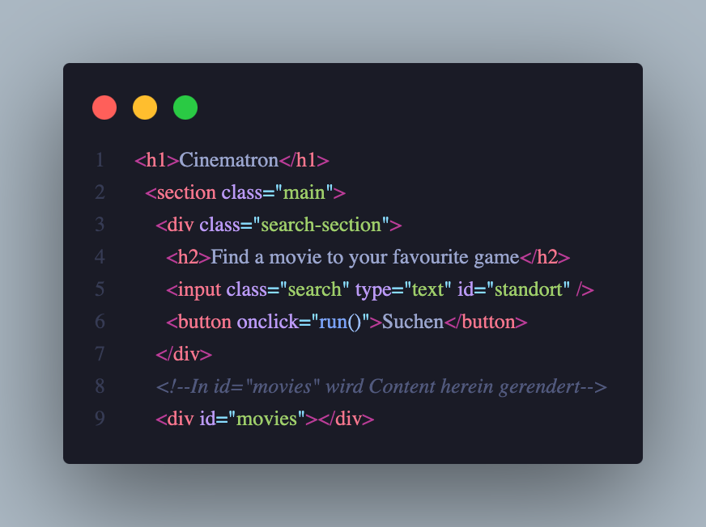
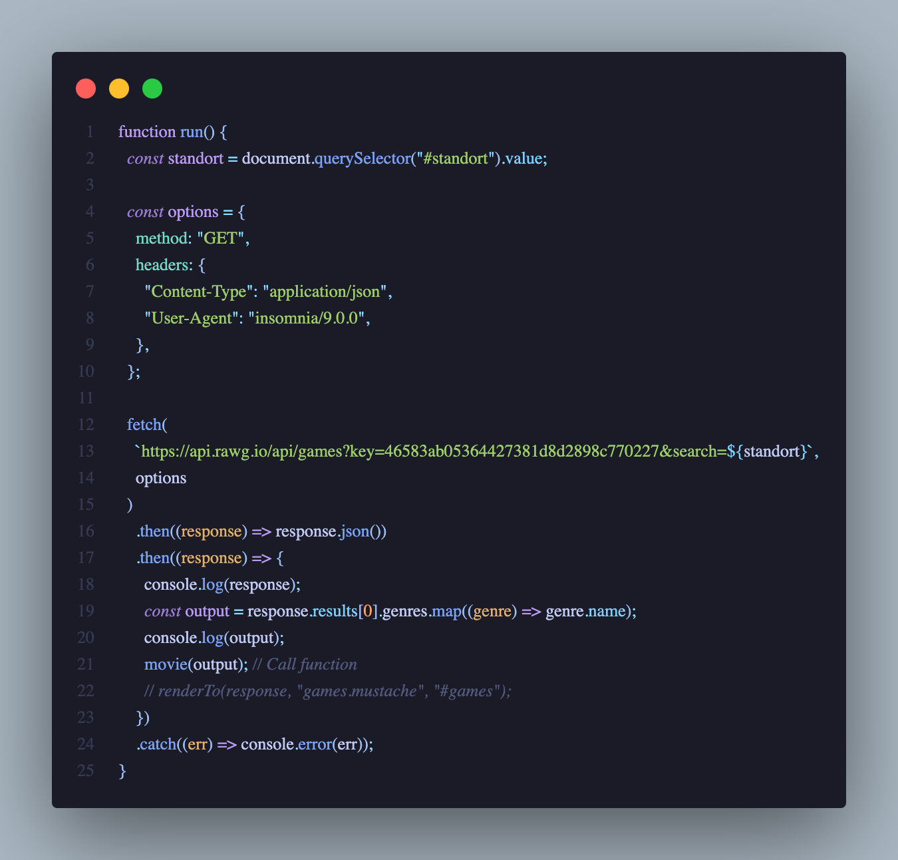
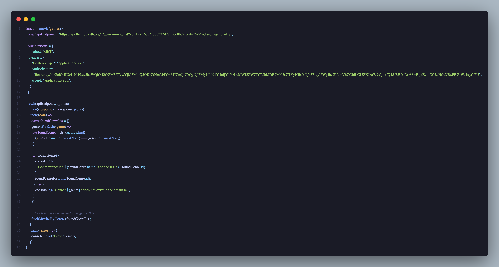
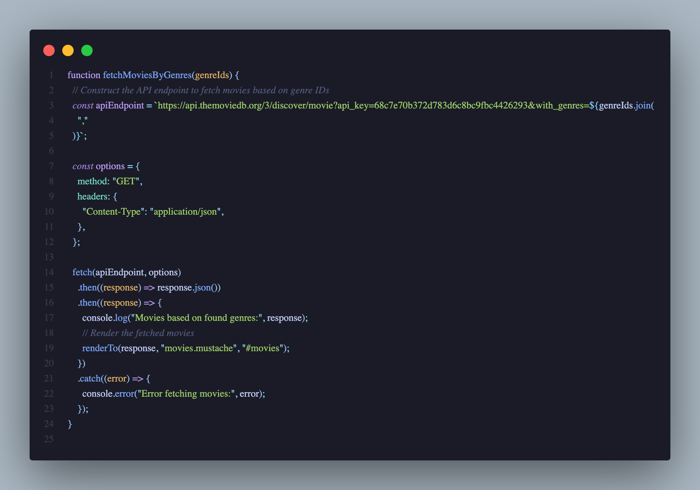

HTML Sektionen
Hier ist der HTML Code für das Projekt, hier wird der Content hineingerendert
Run() Funktion
In dieser Funktion wird der Input im DOM genommen und durch die RAWG.io API gejagt, in der Konsole wird auch das Resultat geloggt
Genres
Diese Funktion dient dazu, die Kategorie des Inputs zu finden und weiterzugeben. Die gefundenen Kategorien werden einzeln in die Konsole geloggt. Ausserdem wird in dieser Funktion noch die Kategorie mit der The MovieDB Datenbank abgegelichen, es wird sozusagen übersetzt und überprüft ob es diese Kategorie in der anderen Datenbank gibt
Filme filtern und rendern
Mit dieser Funktion wird das Resultat der oberen Erklärung genommen. Die Filme werden nach Genre gefiltert und gerendert
